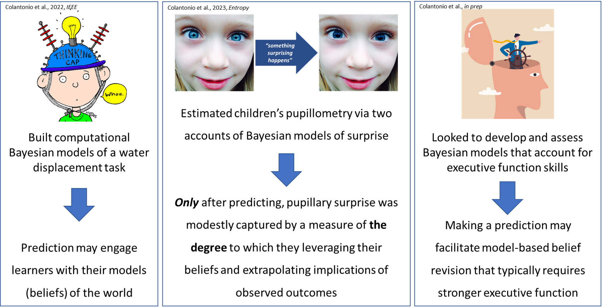

<body>
<main>
	  <p><center>Computational Models of Learning, Emotion, and Individual Differences </p>
	  <p><center>Awe: Epistemic Emotions & Metacognition </p>
		<p><center>Encouraging Curious Behaviors </p>
</main>
<footer>
		<ul class='center'>
				<li><a href="mailto:colantoniojoseph@gmail.com" class="menu">
					
				</a></li>
				<li><a href="https://github.com/ColantonioLearn", target="_blank" class="menu">
					
				</a></li>
				<li><a href="https://projects.iq.harvard.edu/ccdlab/people/joseph-colantonio", target="_blank" class="menu">
					
				<li><a href="https://www.linkedin.com/in/joseph-colantonio-63186692/", target="_blank" class="menu">
					
				</a></li>
	</ul>
</footer>
</body>
